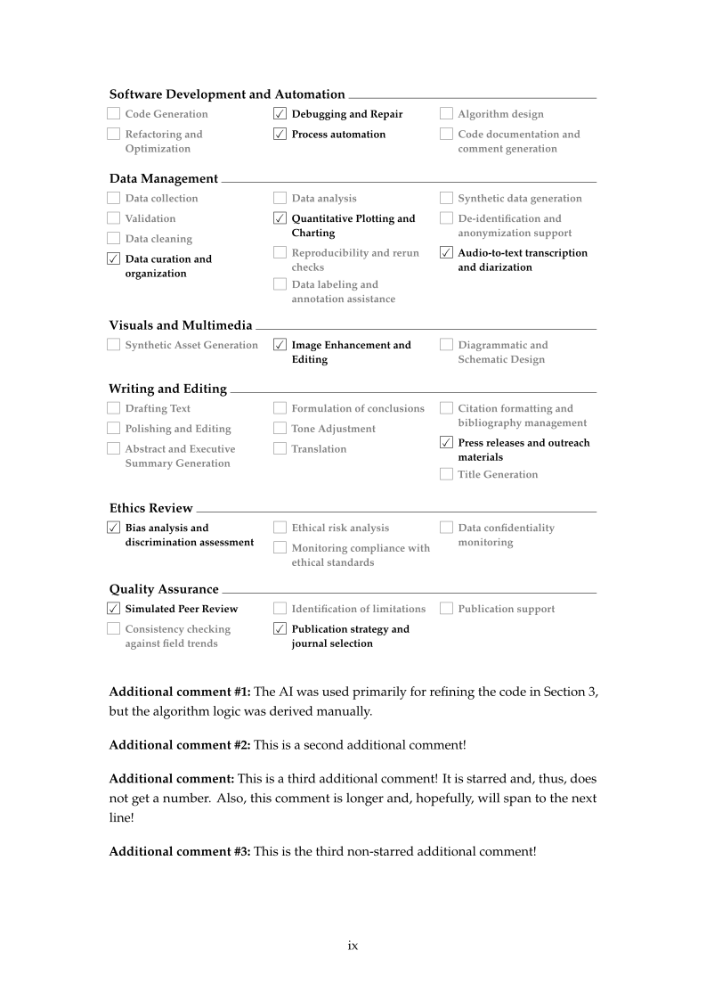

Dezembro trouxe a funcionalidade que melhor envelheceu, e bastante suporte a novas escolas.
Declarar como usaste IA
As universidades esperam cada vez mais uma declaração sobre o uso de IA
generativa numa tese. O template integra o pacote aidisclose, para que a
declaração faça parte do documento em vez de ser improvisada no fim.


Mais três escolas da ULisboa
A FCUL (Faculdade de Ciências), o IST (Instituto Superior Técnico) e o ISEG (Instituto Superior de Economia e Gestão) juntaram-se à lista de escolas suportadas, e a maioria das escolas recebeu um novo desenho de lombada.
Nos bastidores
O stocksize.sty foi reescrito em expl3 e a definição da mancha de texto
passou a usar o pacote geometry em vez do mecanismo próprio do memoir —
aborrecido visto de fora, mas é o que faz com que tamanhos de papel e margens
menos comuns se comportem de forma previsível.